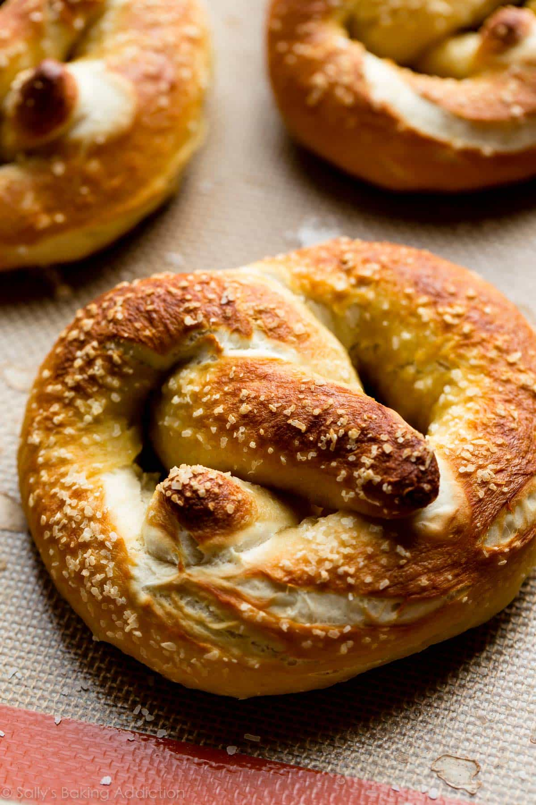

Homemade Pretzels

Description
A homemade pretzels recipe that taste 100x better than the frozen ones you get at the store.
Yield : 12 pretzels
Estimated time : 40 minutes
Ingredients
- 1 and 1/2 cups of warm water (around 100F is optimal)
- 2 and 1/4 teaspoons of instant or active dry yeast (one standard packet)
- 1 teaspoon of salt
- 1 tablespoon brown sugar or granulated sugar
- 1 tablespoon unsalted butter, melted and slightly cool
- 3 and 3/4 cups (469-500g) of all-purpose flour (spoon & leveled), plus some more for hands and work surface
- Coarse salt for sprinkling
Baking Soda Bath
- 1/2 cup of baking soda
- 9 cups of water
Equipment
- Mixing bowl
- Stand mixer (optional)
- A large pot
- Silicone baking mats (use parchment paper as a substitute if you don't have this).
Recipe
- Whisk the yeast into warm water and allow to sit for one minute.
- Whisk in salt, brown sugar, and melted butter.
- Slowly add 3 cups of flour, one cup at a time, while mixing with a wooden spoon or stand mixer.
- Mix until the dough is thick, add 3/4 cup more flour until the dough is no longer sticky.
- If it is still sticky, add 1/4-1/2 cup more, as needed. Poke the dough with your finger, if it bounces back, it is ready to knead.
- Turn the dough out onto a floured surface and knead the dough for 3 minutes.
- Form the dough into a ball, cover lightly with a towel, and allow to rest for 10 minutes (in the meantime, get your baking soda bath ready!).
- Preheat the oven to 400 °F
- Line 2 baking sheets with silicone baking mats, or parchment paper if using that. If you are using parchment paper, lightly spray with nonstick spray or grease with butter, set aside.
- With a sharp knife or pizza cutter, cut dough into 1/3 cup sections (about 75g each).
- Roll the dough into a 20-22 inch rope. Form a circle with the dough by bringing the two ends together at the top of the circle. Twist the ends together. Bring the twisted ends back down towards yourself and press them down to form a pretzel shape.
- Bring baking soda bath to a boil. Drop 1-2 pretzels into the boiling water for 20-30 seconds. Any more than that, your pretzels will have a metallic taste.
- Using a slotted spatula, lift the pretzel out of the water and allow as much of the excess water to drip off.
- Place pretzel onto prepared baking sheet and sprinkle with coarse sea salt.
- Repeat with remaining pretzels.
- Bake for 12-15 minutes or until golden brown
- Remove from oven and serve warm
- Enjoy!
Back to home